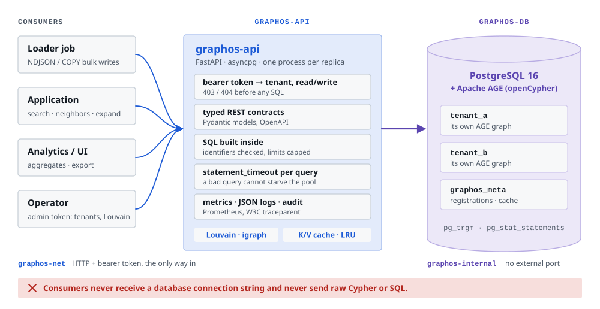
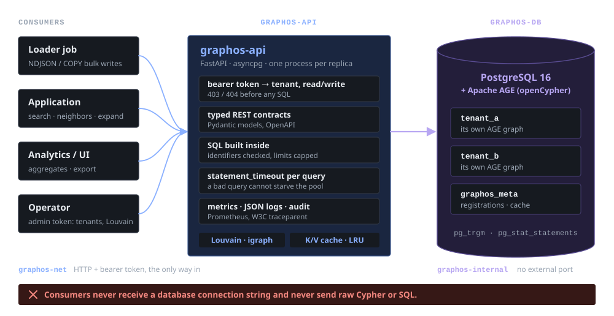
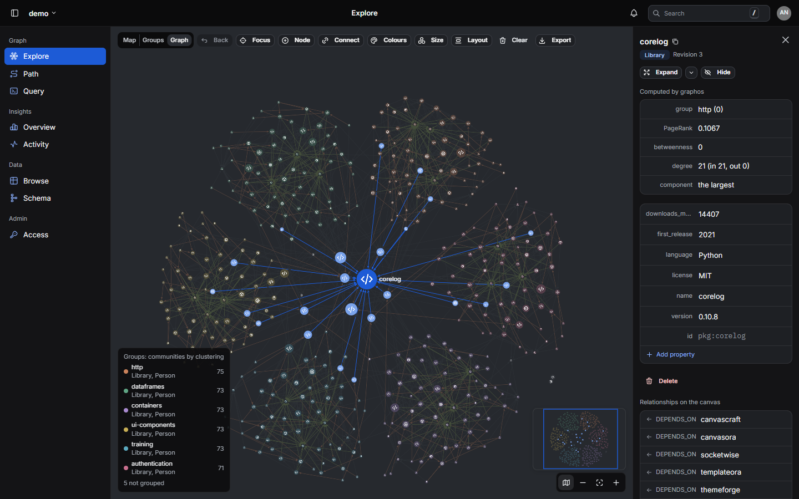
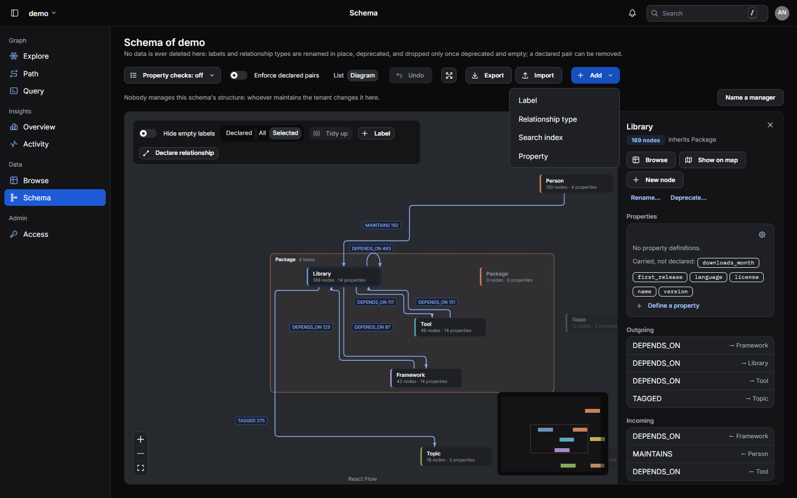
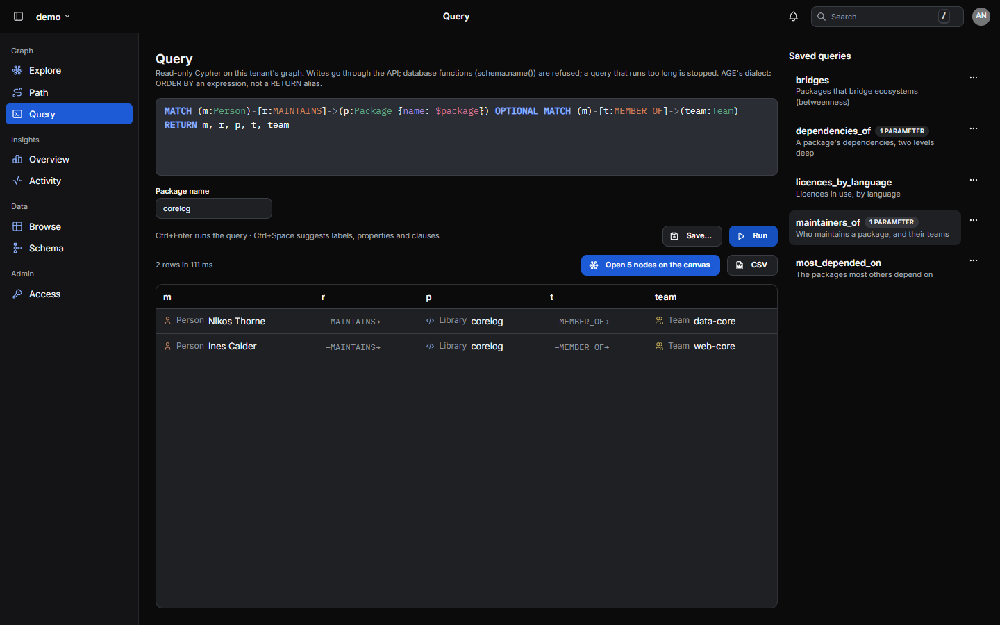
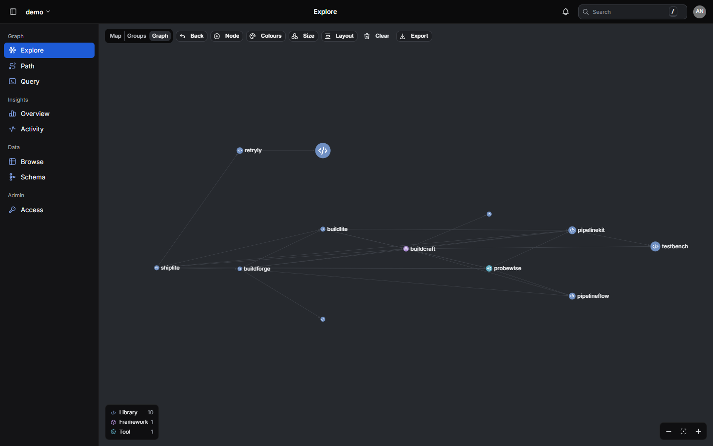
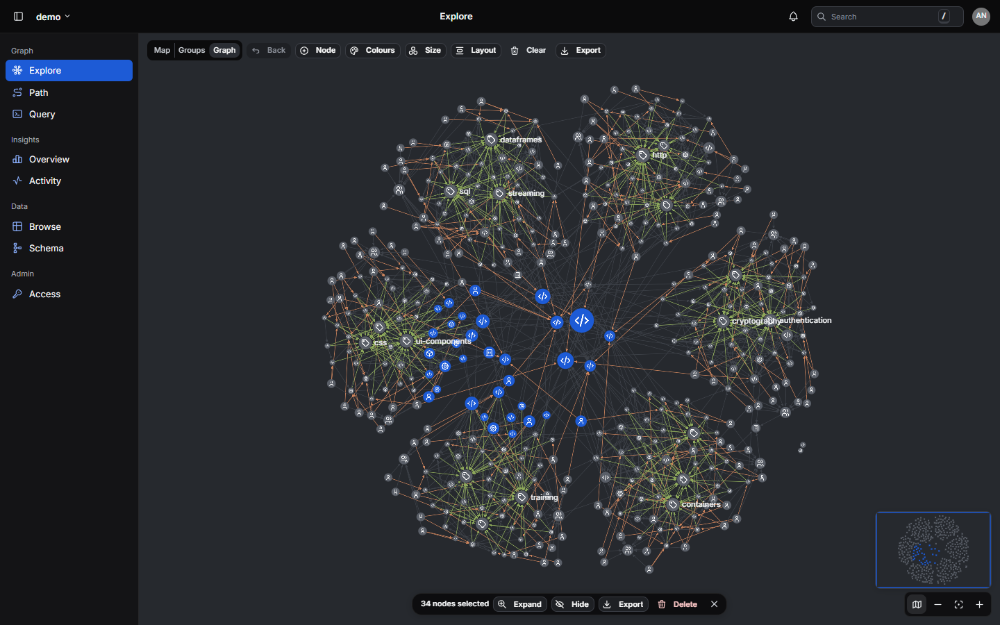
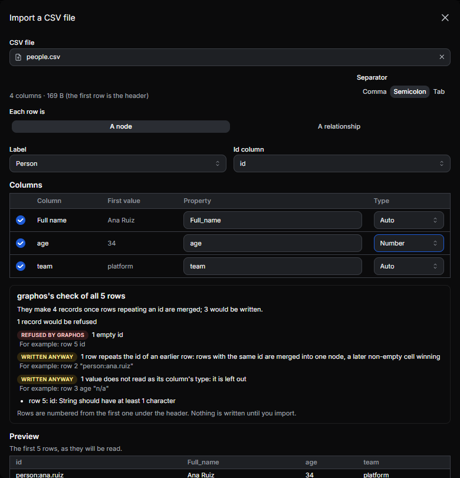

γράφος /ˈɣɾa.fos/ noun a written record, a letter; from γράφω, to write.
graphos
A multi-tenant property-graph service: PostgreSQL + Apache AGE behind a typed HTTP API.
For teams whose services share connected data (dependencies, assets, knowledge graphs, agent memory) and who already run PostgreSQL.
Open source · Apache-2.0 · version 0.15.0
In 30 seconds
- The problem: Connected data turns up in most systems. Once several services need it, each one ends up holding database credentials, writing its own Cypher, and solving bulk loading, indexing and isolation on its own.
- The approach: One service owns the graph. Your services call a typed REST API, and AI agents use the same reads over MCP. Only graphos talks to PostgreSQL + Apache AGE, on a private network.
- What it is not: Not a new database engine, and not tied to any domain: graphos ships no labels of its own. Not a Cypher passthrough either: Cypher is read-only, by design, because writing through the API is far faster and safer on AGE (why).
- Licence: Apache-2.0. Optional community detection uses a GPL library, left out of the published images (details).
From many database clients to one graph service
![Left: three services each embed a database driver, a connection string and their own Cypher, and all reach one shared graph database, so credentials and query text spread, there is no tenant boundary, a slow query affects everyone and each team re-solves bulk load and indexing. Right: the same services call graphos over typed HTTP; graphos alone reaches PostgreSQL with Apache AGE on a private network, giving each consumer its own account and short-lived tokens, a graph per tenant with bounded, timed queries, and built-in bulk load, indexing and graph metrics, with community detection as an optional extra.](images/problem-light.svg)
![Left: three services each embed a database driver, a connection string and their own Cypher, and all reach one shared graph database, so credentials and query text spread, there is no tenant boundary, a slow query affects everyone and each team re-solves bulk load and indexing. Right: the same services call graphos over typed HTTP; graphos alone reaches PostgreSQL with Apache AGE on a private network, giving each consumer its own account and short-lived tokens, a graph per tenant with bounded, timed queries, and built-in bulk load, indexing and graph metrics, with community detection as an optional extra.](images/problem-dark.svg)
What graphos is made of
- Storage
- PostgreSQL 18 with Apache AGE 1.8; each tenant is its own AGE graph
- API
- Typed HTTP (FastAPI), JSON and NDJSON; the contract at
/openapi.json - Access
- Users and service accounts, 15-minute tokens, OpenID Connect sign-on, a level per tenant
- Algorithms
- Louvain and Leiden (optional extra), PageRank, betweenness, components, degree
- Clients
- An async, typed Python client; an optional web UI; plain HTTP
- Images
ghcr.io/pomentum/graphos-apiandgraphos-ui, amd64 and arm64- Licence
- Apache-2.0; community detection, an optional extra, uses a GPL library (which installs have it)
- Latest
- 0.15.0
- Agents
- An MCP endpoint,
/mcp: 22 read tools on the API's tokens and grants
What sets it apart
Tenants and schema
Each tenant is its own AGE graph, and a caller reaches only the tenants it is granted. graphos ships no labels of its own: you declare yours, add property rules if you want them, and rename or deprecate them later, in place (usage).
Fast, idempotent writes
Send batches, an NDJSON stream or a whole snapshot. graphos stages them with COPY and upserts them, so sending the same data twice changes nothing: 1,153–4,840 edges a second in our benchmark, where per-row Cypher MERGE managed 31 (usage, AGE notes).
Reconcile by difference
Send the full set of a node's (or a type's) edges as your source has them. graphos adds, changes and removes only what differs, in one transaction (usage).
Graph algorithms
Communities (Louvain or Leiden, an optional extra), PageRank, betweenness, components and degree, computed beside the API and stored on the nodes. A re-run writes only what changed, and a community keeps its id from run to run (what each finds).
AI agents (MCP)
/mcp gives agents graphos's reads as tools, with the caller's own grants and a schema summary written for models. MCP clients sign people in by themselves (agents guide).
Change feed
Every write is recorded in the same transaction that makes it. Read the changes after a cursor, or follow them live (usage).
Everything else, from CSV import and rule-derived edges to background jobs, metrics and the audit log, is in the feature survey.
What to expect on a laptop
Measured on a laptop (8 cores, 16 threads; 31 GB of memory for Docker) with PostgreSQL 18 and AGE 1.8, the image's default settings (128 MB shared_buffers) and one graphos worker. Your hardware and settings will differ: read these as orders of magnitude, not guarantees.
| Read | 1 user | 5 users at once |
|---|---|---|
| The whole mix, requests per second360 requests in 67 s and in 35 s | 5.4 /s | 10.3 /s |
| Shortest paths of up to 4 hops | 154 ms | 529 ms |
| Neighbours of a node (up to 200) | 350 ms at 5 users | |
| Console aggregate over a whole label | 621 ms | 1,397 ms |
| Measured | Result |
|---|---|
Bulk edge writesCOPY-staged upserts; 13k nodes and 44k edges, 4 GB shared_buffers | 1,153–4,840 edges/s |
| Dataset import into an empty tenantthe graph above, 1.19 million rows, every row through the tenant's indexes | 447 s, about 2,500 rows/s |
| Recording a write in the change feedin the same transaction as the write | +1.8 ms |
| Map of every label and the edges between themten million edges, sampled | about 1 s |
| Graph metrics, first runPageRank, betweenness, components and degree; synthetic, 270,000 nodes and 1.0 million edges | 51 s |
| Louvain communities, first runthe optional igraph extra; the same synthetic graph | 276 s |
Where the speed comes from: before and after graphos
| Measured | Before | graphos | Factor (log scale) | × |
|---|---|---|---|---|
Bulk edge writesper-row Cypher MERGE → COPY-staged INSERT … ON CONFLICT | 31 /s | 1,153–4,840 /s | 37–156 | |
| Substring search on a nameno index → the trigram index graphos creates | 1.2 s | 1.3 ms | ~920 | |
| Lookup by community idno index → the index graphos creates | 2.4 s | 0.5 ms | ~4,800 | |
| 12-read mix, 5 users, 360 requestsPostgreSQL 16 / AGE 1.6 → PostgreSQL 18 / AGE 1.8 | 57 s | 35 s | 1.6 | |
| Graph metrics re-run after 1 % more edgesevery moved score rewritten (0.13.2) → scores that moved under 1 % left as stored (0.14.0) | 40 s | 17 s | 2.4 | |
| Community re-run after 1 % more edgesthe optional igraph extra: Louvain from scratch, the default → Leiden from the stored communities, on request (0.14.0) | 103 s | 28 s | 3.7 |
The MERGE baseline came from an earlier graphos that still wrote with Cypher, so it can no longer be rerun; the index rows compare a table without the index against one with it; the PostgreSQL 16 copy of the read-mix graph carried about 3× dead space, which favours PostgreSQL 18. Setups and caveats: measured on PostgreSQL 18, why every write is SQL.
One service owns the graph


![Community detection is an optional extra (python-igraph). A call to recompute-communities, by a user with maintain on the tenant, streams edges out of PostgreSQL as integer ids with plain SQL, builds a weighted undirected igraph with its vertices in id order, runs Louvain, or Leiden starting from the communities the last Leiden run stored, in a separate process with a fixed seed, and matches each new cluster to its predecessor from the last run by Jaccard overlap of at least 0.5 so community ids stay stable. Results are written back with COPY and a single UPDATE, then the community id is denormalised onto every edge so scoped traversals use an index. Only one run per tenant happens at a time, a dry run previews the partition, and the response reports time per step and modularity.](images/communities-light.svg)
![Community detection is an optional extra (python-igraph). A call to recompute-communities, by a user with maintain on the tenant, streams edges out of PostgreSQL as integer ids with plain SQL, builds a weighted undirected igraph with its vertices in id order, runs Louvain, or Leiden starting from the communities the last Leiden run stored, in a separate process with a fixed seed, and matches each new cluster to its predecessor from the last run by Jaccard overlap of at least 0.5 so community ids stay stable. Results are written back with COPY and a single UPDATE, then the community id is denormalised onto every edge so scoped traversals use an index. Only one run per tenant happens at a time, a dry run previews the partition, and the response reports time per step and modularity.](images/communities-dark.svg)
Explore, edit, query












Run it on your machine
Docker with a recent Docker Compose (the docker compose plugin) and about 4 GB of memory for Docker. These commands run the published images (ghcr.io/pomentum/graphos-api and graphos-ui, amd64 and arm64), so nothing is built. They leave out community detection, whose library is GPL: add -f docker-compose.igraph.yml to download it at the first start. To build from source, add -f docker-compose.build.yml (the installation guide).
git clone https://github.com/pomentum/graphos.git && cd graphos
# 1. Random database passwords and graphos's master key, written once to
# services/graphos/deploy/secrets/ (gitignored)
bash scripts/init-secrets.sh # Windows: pwsh scripts/init-secrets.ps1
# 2. Database, API and web UI, from the published images (leave out --profile ui for the API alone)
docker compose -f docker-compose.graphos.yml --profile ui up -d
# 3. Up?
curl -s http://127.0.0.1:8080/readyz # {"status":"ready",...}
- Sign in to the UI at
http://127.0.0.1:8081asgraphos/graphosand choose a new password: the installation guide. - Register a tenant, write nodes and edges, read them back: the usage guide, or the Python client (
pip install graphos-client, on PyPI). - Load the demo tenant to explore:
08_demo_ecosystem.py. Its communities, the colours of UI 01, need the igraph extra: start the stack with-f docker-compose.igraph.yml, or the demo loads without them.
Questions people ask
Who is graphos for?
Teams with several services that share connected data, such as dependencies, assets, a knowledge graph or an agent's memory, and who run PostgreSQL or are happy to. If a single application owns the graph and needs to write it with Cypher, plain Apache AGE or a native graph database suits it better.
Why not Neo4j, or plain Apache AGE?
graphos runs on PostgreSQL, a database you may already operate, back up and monitor. It is Apache-2.0 (its optional community detection uses a GPL library, which installs have it), has tenants, users and grants built in, and keeps your data in AGE's own format, so you can leave at any time. Plain AGE gives you Cypher on PostgreSQL, but leaves every service to hold database credentials and to solve loading, indexing and isolation itself, with Cypher writes at about 31 edges a second.
A native graph database wins where you need deep, variable-length traversals (graphos expands up to 5 hops, finds paths of up to 8, and its console refuses variable-length patterns) or a workload that writes heavily in Cypher.
What is the licence, and where does GPL come in?
graphos and its published images are Apache-2.0, with permissively licensed dependencies only; the graph metrics (PageRank, betweenness, components and degree) run on rustworkx, which is Apache-2.0 as well. Community detection (Louvain and Leiden) needs python-igraph, which is GPL-2.0-or-later, so it is an optional extra. The published images leave it out; start them with -f docker-compose.igraph.yml and the container downloads it at its first start. A build from source includes it unless you set GRAPHOS_EXTRAS empty when you build (details).
Why is Cypher read-only?
Two reasons, both measured. Speed: per-row Cypher MERGE managed 31 edges a second, where graphos's COPY-staged upserts manage 1,153–4,840. Safety: AGE mishandles Cypher writes to tables carrying the columns graphos adds for revisions and communities (on AGE 1.6, they crashed the database server). Writing through the API also keeps revisions, the change feed and the audit log right. The console still reads with Cypher; it refuses write clauses before they reach the database (why every write is SQL).
How big can a tenant get?
graphos sets no limit on a tenant's size. What has been measured: a 251,246-node, 940,144-edge graph read on a laptop (above), the graph algorithms on synthetic graphs of up to 3.0 million edges, and the label map on ten million edges. A single snapshot import takes up to 50 million rows. Larger graphs mostly need more memory for PostgreSQL (tuning).
Can I leave?
Yes, at any time. Every tenant is an ordinary AGE graph in ordinary PostgreSQL tables: AGE's Cypher and plain SQL read it with no graphos running, and a dataset export loads into plain AGE. The guide Reading graphos's data without graphos shows how.
Is it ready for production?
It has what running it for other people needs: users, grants and single sign-on, secrets sealed at rest, statement timeouts, metrics and an audit log. Every change to main is tested in CI against PostgreSQL 18 with AGE 1.8, and an upgrade brings the database up to date when graphos starts. The HTTP API is versioned (/v1) and its contract is published as OpenAPI. graphos is still before 1.0, so a release can change the API; each release's changes are in the changelog.
Why do tokens last only 15 minutes?
So a leaked token is useful for minutes, not months. People and programs sign in once; the web UI and the Python client renew their tokens by themselves, so you rarely notice. The lifetime is a setting, GRAPHOS_ACCESS_TOKEN_TTL_S.
Read further
- Installation guide
- Installing, the first sign-in, users, single sign-on, production settings, upgrading
- Reading graphos's data without graphos
- The table layout, reading it with SQL or Cypher, taking it out, loading an export into plain AGE
- Upgrading the database
- Moving an older graphos database to PostgreSQL 18 / AGE 1.8 with
docker compose up - Single sign-on
- Registering graphos at an OpenID Connect provider, a Keycloak example, troubleshooting
- Graph algorithms
- What the communities (Louvain, Leiden), PageRank, betweenness, components and degree find, what they are for, and how Louvain and Leiden differ
- Usage guide
- Practical integration patterns
- Connecting an agent (MCP)
- Where
/mcpis, getting a token, configuring a client, the tools and resources, security - Feature survey
- Every capability, briefly
- Concept
- Architecture, endpoint catalogue, capacity planning
- Apache AGE notes
- AGE pitfalls, indexing, Postgres tuning, measured numbers
- Web UI
- Running the UI, its views, how its code and text are organised